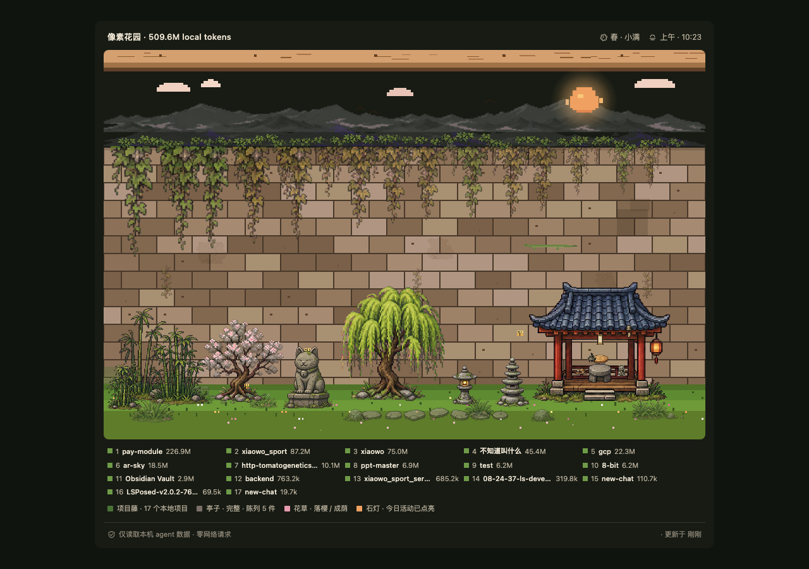
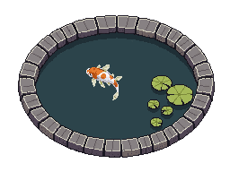

Projects become vines
Every project keeps its own growth path, even when two folders share the same name.
A private desktop garden for AI builders
Local Claude Code, Claude Cowork, and Codex activity becomes vines, light, seasons, and small courtyard changes. Your work stays on your machine.

FIELD NOTES / 01
The garden is not another dashboard asking for attention. It quietly shows what has been growing, while detailed local data stays one step away.
Every project keeps its own growth path, even when two folders share the same name.
Usage, cache activity, and model mix gradually change the courtyard's richness.
Repeated building and thinking becomes stone steps, cats, trees, and pavilion objects.
Local time, season, and recent activity make each visit feel slightly different.
TWO WAYS TO SEE THE SAME WORK / 02
The same local summary drives an ambient 2.5D courtyard and a more direct Wall map of project activity.

GARDEN TOOLS / 03
Explore project rankings, model mix, daily activity, cache ratio, and local cost estimates.
Claude Code, Claude Cowork, and Codex each tend a visible part of the same garden.
Watcher, Scan Now, show and hide, and configurable shortcuts stay close without taking over.
Export the garden, weekly recap, seasonal moment, and year review as local PNG files.
Keep the Tauri garden open, or inspect usage, adapters, cost, and health from the terminal.
When the garden really grows, a small return summary tells you what changed.
FROM LOG TO LANDSCAPE / 04
SOURCE DIRECTORIES: READ ONLY / APP STATE: ~/.local-agent-garden/
PRIVACY PLEDGE / 05
Download DMG for macOS, setup.exe for Windows, or AppImage/deb for Linux.
macOS and Windows community builds are currently unsigned; follow the linked first-launch notes.
The app reads existing local Agent activity and the garden begins growing. The tray watcher keeps it current.
You need Rust 1.85+ and the Tauri 2 CLI.
cargo install tauri-cli --version "^2.0" --locked
cd crates/tauri-app
cargo tauri devCOMMON QUESTIONS / 07
Claude Code, Claude Cowork, and Codex have native adapters. Other sources can use the documented manual JSONL format.
No. Scan and render paths are local, with no analytics, telemetry, remote logs, or remote crash reporting.
No. Source directories are read-only inputs. The app writes only its own state under ~/.local-agent-garden/.
Official Releases include macOS, Windows, and Linux builds. Linux offers AppImage and deb packages.
Current macOS and Windows community builds are unsigned. Download only from the official Releases page and follow the first-launch notes.
No. It is a local trend estimate based on available token splits and the bundled price table. Unknown models remain explicitly unpriced.

YOUR NEXT SESSION CAN GROW HERE
No new cloud account. No activity handed to another service. Just open the garden.
100% LOCAL · ZERO TELEMETRY · MIT OPEN SOURCE